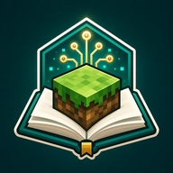

Aula en directo
Visor WebGL
Vista oficial
Mundo de la clase
Arrastra para girar · rueda para acercar · WASD o flechas para desplazarte
Preparando WebGL 2…
Esperando señal del aula: el visor se actualizará cuando Paper publique el estado del mundo.

EduCraftProfesorAula en directo
Vista oficial
Arrastra para girar · rueda para acercar · WASD o flechas para desplazarte
Esperando señal del aula: el visor se actualizará cuando Paper publique el estado del mundo.